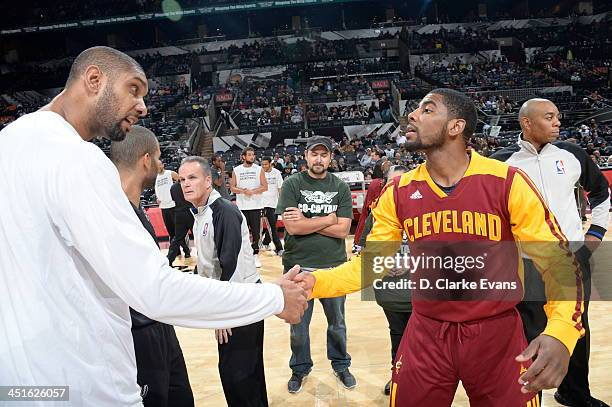

Sports are a very entertaining product that captures the eyes of anyone who wants to look. The are ones that I spend the most time watching and analyzing are soccer (or futbol), football (or american football), and basketball. In each of those sports, one thing they all have in common is that there is always one player that gets all of the love and hype because of their flair and skills. Then there is the other player; the one that doesn't get nearly enough attention and praise, only getting love by those that really love the game and pay attention to the game, the one who's whole game is sticking to the fundamentals.
In the sport of basketball, people love to watch players like a Kyrie Irving, one of the most if not the most skilled players of all time. The flair and the creativity that comes with him is nothing short of jaw dropping. When he turns it up, it becomes must see tv. The space that is created from Kyrie is immense, due to attracting double teams because he can easily go through his opponent. Not just with the dribble package, but also with a crazy lay up package as well. This isn't just a basketball exclusive thing. In the sport of soccer for example, one of the best ever is ronaldinho. He is known for his flair, could dribble, shoot with his left or his right, always forcing a double and always had your eyes glued to the screen.
Then there is the other side of the coin, the players that get things done purely through fundamentals. Doing nothing extra, just sticking to the basics and doing what needs to be done. They don't stick out on the field or court much, and a lot of people wouldn't say that they pass the "eye test", but on the stat sheet, they excel. Players that come to mind the most are players like a Tim Duncan, or a Tom Brady. They don't do anything flashy much; they just make the right plays at the right time. They don't rely on the athleticism as much as their creative counter parts. They make the right reads, or play defense in Tim Duncan's case. Although they aren't as flashy, that doesn't make them not great, if anything they are the greatest ever in their position, not to mention the gravity that they demand.
